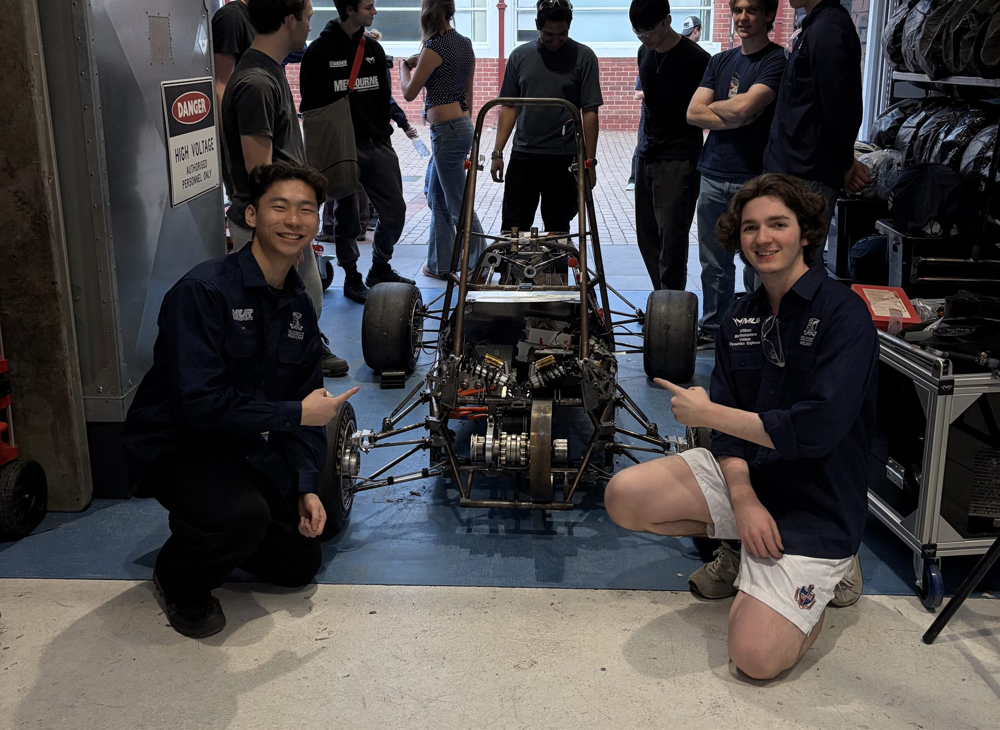

Melbourne University Racing
Formula SAE (Society of Automotive Engineers) is a global competition where universities compete in a range of events revolving around the conception, design, fabrication, finances and on-track performance of a formula-style race car. Melbourne University Racing (MUR) is the University of Melbourne’s own Formula SAE team, which has been competing for many years, but after a shutdown during COVID we are now regaining the knowledge we once had, to start competing at the top again.
I joined MUR as a vehicle dynamics engineer towards the end of 2025, and going into 2027 I will be the vehicle dynamics (VD) lead. I have loved everything about being a part of MUR, from the hands-on experience to the social side of it. It has been one of the best decisions I’ve made at university so far. It has not only let me put what I’ve been learning to use, but also given me a reason to keep learning.
I’ve already learnt so much from my time at MUR, and going into 2027 as VD lead, I’m sure there is still much more for me to learn. In 2027 we are shifting to a different motor layout, which has drastic effects on vehicle dynamics performance, possibly leading to a worse lap time, or possibly a far better one. As VD lead, I hope to push the team to focus on understanding the fundamentals during this shift.